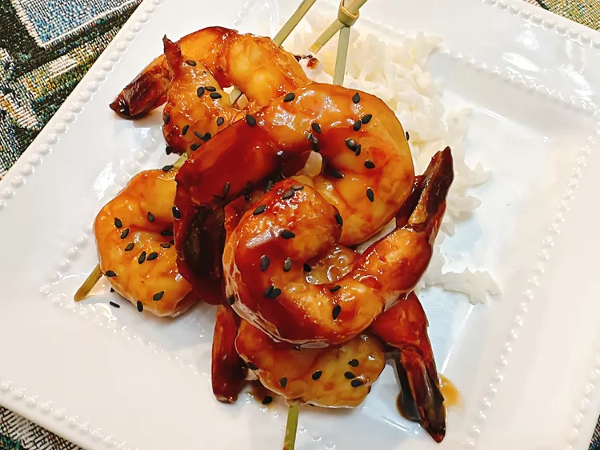

Honey Shrimp

Description
This hot honey shrimp has a dazzling flavor profile—sticky, tangy, and just a little sweet heat. Serve as an appetizer, on skewers if you like, or feel free to add the shrimp to some stir fry vegetables for dinner.
Ingredients
Sauce
- 1/2 cup reduced-sodium soy sauce
- 2 tablespoons brown sugar
- 2 tablespoons rice vinegar
- 1 tablespoon hot honey, such as Mike's®, or to taste
- 1/4 teaspoon ground ginger
- 1 teaspoon minced garlic
- 1 teaspoon sesame oil
- 1/4 cup water
- 1 tablespoon cornstarch
Shrimp
- 1 pound colossal shrimp, peeled and deveined
- salt and freshly ground black pepper to taste
- 2 teaspoons vegetable oil
- 1 tablespoon black sesame seeds
Steps
- Stir soy sauce, brown sugar, rice vinegar, honey, ginger, garlic, sesame oil, water, and cornstarch together in a small bowl. Set aside.
- Pat shrimp dry with a paper towel. Season with salt and pepper.
- Heat a skillet over medium-high heat. Add vegetable oil; once oil is shimmering, cook shrimp until tails begin to curl, about 3 minutes.
- Pour in sauce; bring to a simmer and cook until shrimp is bright pink and opaque and sauce is thickened, about 2 minutes.
- Sprinkle with black sesame seeds and serve.
Odin Recipes